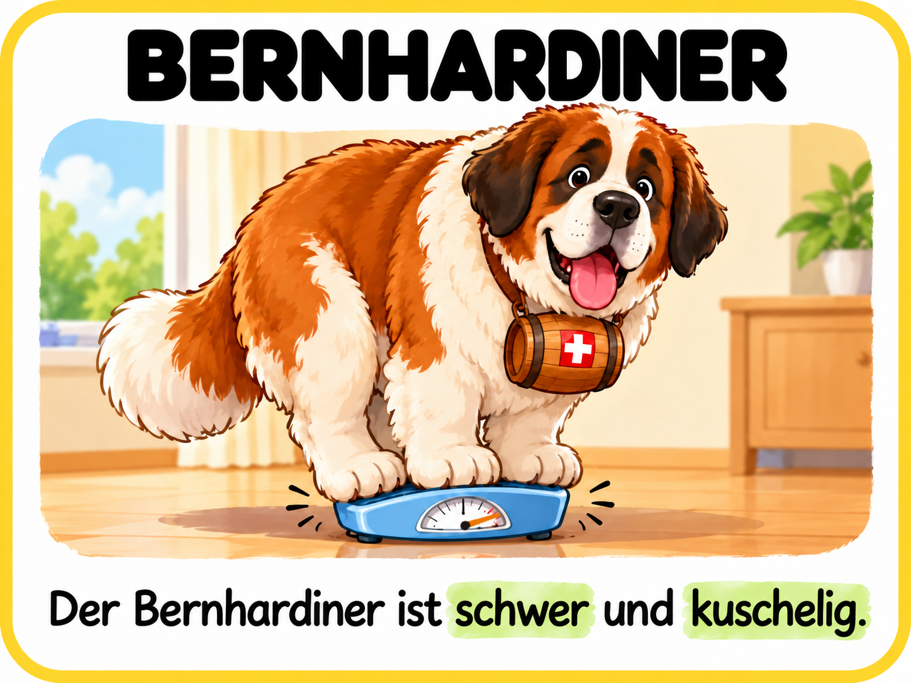
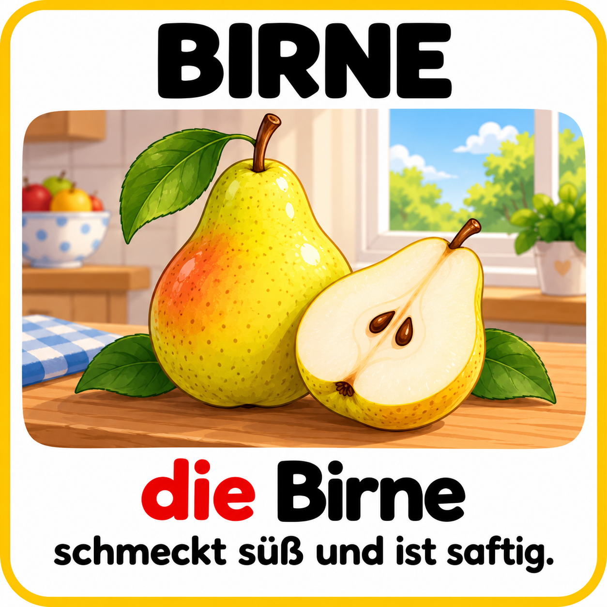
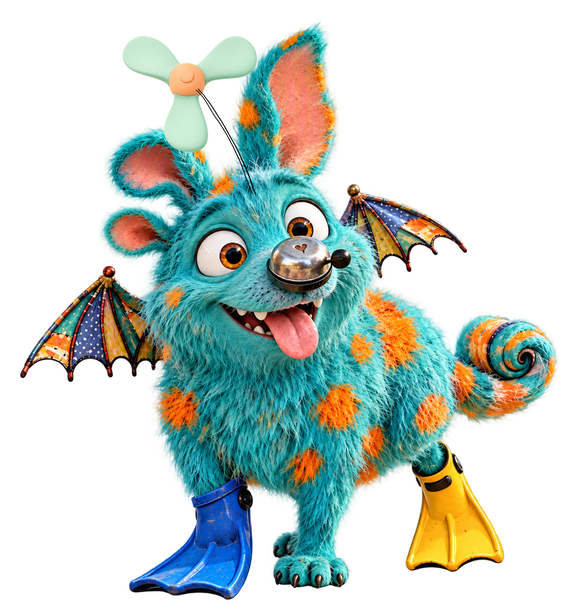

Eigenschaften-Memory
Was ist weich, schwer oder kuschelig?
Merke dir die Bilder und löse die Fragen.
Was möchtest du heute spielen?

Was ist weich, schwer oder kuschelig?
Merke dir die Bilder und löse die Fragen.

Eine Birne zum Essen oder eine Glühbirne?
Finde die Bilder mit demselben Wort.

Sofa oder Couch? Zwei Wörter für dieselbe Sache.
Lies, vergleiche und finde die Wortpaare.

Lies die Frage und entdecke die verrückten Unterschiede auf den Bildern.